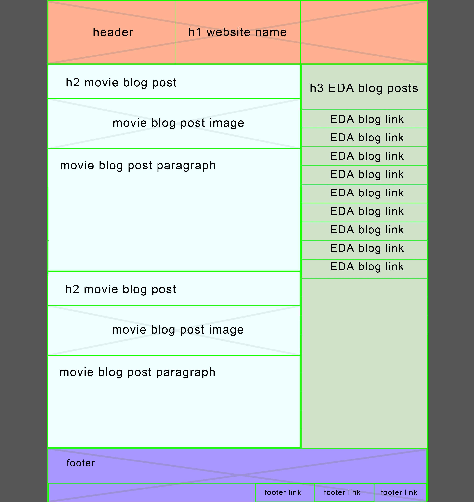

Technical Part 3 30/07/17
- What a responsive site is, and why responsiveness is important. Resposniveness in webpages allows elements in the page to look different depending on the size of the screen or device through the use of Media Queries. This is important because without this your wepage may look good on a desktop site but on a small screen or mobile device it may look too busy, the font may be too small or certain elements could be off to the side of the screen. Mobile tends to be more linear and simple whereas desktop allows for a lot more to be going on on the webpage.
- What mobile first design is, and why it's important. Mobile-first design is the concept of building your webpage from mobile up to desktop. The term "Progressive Enhancement" sums up this way of thinking as opposed to working from desktop down to mobile with "Graceful Degradation". This way, you are building up your desktop site and adding features to make it more robust than taking away features and stripping ypur product down. Taking the mobile-first design approach is proving to be important as statistics show that a large majority of people are accessing the web more through their mobile devices more than on their desktop. From a technical standpoint it has advantages in that the page only loadswhat it needs to, the bare minimum, rather than loading these features and taking them away. This makes for a much faster and clean experience.
- What frameworks are, and their pros and cons. Frameworks are packges designed to make the process of building a website easier as they have preset stylesheets and grid structures for you to follow. This is great for cross-browser capability, as well as learning good code practice but it can be a bit of a slower learning process as you aren't doing the bulk of it.
- What a wireframe is and why we use it. A wireframe is kind of like a blue print to help you visualise where certain elements are going to be placed on the webpage. In the images below you can see how both my index and blog pages are intended to look in both mobile and desktop versions. This was also useful for me in boxifying all of my elements, shown in green. 
- The aspects of your wireframes you found difficult to implement, and why. I found that getting the navigation bar on the right-side (or any side) was particularly hard as most people online who tend to use the Skeleton layout have their navigation bar at the top. I've still got a lot to learn and the framework concept has been hard for me to get my head around.